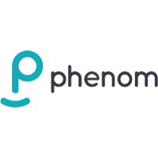

2021 Work Term Report
Dear reader, by the end of this post I hope that you're able to understand the ins and outs of my work at Phenom and the cool projects I worked on, as well as all the great things that I learned! I'll get more into my role later, but as a brief introduction I started my work at Phenom on a small team of three people (myself included) working as a frontend developer in React. I received a MacBook Pro as my work laptop prior to starting and joined my team for my first day on May 1st, 2021.
<About-Phenom/>
Phenom or Phenom People as it's also referred to is a SaaS startup founded in 2011 and
based out of Philadelphia. The company offers a unique recruiting solution that's based
heavily on AI/ML algorithms which can allow companies to recruit faster than ever, while
sourcing the top talent available. Phenom offers various services from fully fledged
recruiting sites hosted by Phenom to smaller scale solutions to help out existing hiring
structures.
Phenom was founded by two brothers and their goal is "To help a billion people find the
right job." I appreciate that they truly believe in this goal, it's not just a
marketing statement. Every quarterly global meeting they place a large emphasis on finding
the right job, because people are more productive and happier when they're in a role that
fits them. Another cool fact about the company, which I was unaware of at the start of my
internship is that they're considered a tech "unicorn" with a 1.4 billion dollar valuation
in 2021. The CEO plans to take the company public in the near future.
The last neat thing I'll add about Phenom is their desire to be "not normal" the company embraces
that we're all unique and have strange experiences or characteristics and that those shape who
we are. Everyone who joins the company must do a "not normal" presentation during their
introduction week, usually on the weekly all hands meetings with 50-200 people on the call.
You basically present a few things that are unique or weird about you, this is a really cool
low-stress opportunity to learn about your coworkers and I think it really brings teams together.
The slide I used for my presentation is down below and my "not normals" consisted of:
being close friends with a deer growing up, having dual citizenship, being an automotive
photographer and liking pineapple on my pizza!
<Goals/>
Let's talk about what I wanted to get out of this work term. Having had no experience
with react and minimal js practice prior to this internship, I didn't have super specific goals
about what technologies I wanted to learn and focused more on soft skills and other aspects.
That being said, I did learn a lot of tech and I'll get into that in the reflections section.
I also had quite a few goals so I'll focus mainly on the ones that were particularly important
to me.
Goals for the first half of the work term
- Become better at communicating ideas. Specifically while coding, I wanted to improve my ability to have a clear and understandable conversation about problems and solutions.
- Seek more in depth answers, part of working at Phenom was to be curious and I really wanted to embrace that. Getting full answers instead of just what I needed would improve my understanding of that topic.
- Improve my tech literacy. Part of describing problems and solutions is to use the right terminology so that everyone knows what you're talking about. I found myself using non-specific words like "this" or "that" or "thing" and that's not super useful
- Develop more creative solutions. Obviously there's best practices and ways that work better certain things, but I wanted to start thinking outside of the box more, while still offering an optimal/well thought out solution to problems.
Goals for the second half of the work term
- Become a more well rounded leader. I think part of being successful in general is being able to lead, and I wanted to improve my ability to take initiative and lead by example.
- Get better at estimating time requirements for tickets and other requests, as well assessing how I can improve my completion times while still producing quality work.
- Continued improvement on creative thinking and problem solving.
These goals gave me a good roadmap of specific areas to improve on over the course of my work term. After about the first week and a half of work, one goal that I developed for myself was to try and become more acquainted with CSS. During the first week it became clear to me why many frontend devs truly hate the jumbled mess that CSS has become. However, I realized that I wasn't going to be able to escape working with styles as a frontend dev so I wanted to sharpen my skills over the term and become a CSS wizard.
<My-Job/>
This is the part where I get to tell you about all the cool stuff that I did. Let me get into the job situation a little bit more before I continue. For starters, almost all of Phenom's development teams are based in Hyderabad, India. This meant a 10 and a half hour time difference which was interesting to say the least. I started work everyday at 5am, took an hour-long "lunch" at around 9 and got my Tim Hortons then went back to work until roughly 1pm. It was tough for the first week but I actually loved this schedule because it allowed me to do more with my afternoons and evenings. I'll go over the three projects I got to work on briefly down below.
Project One - Job Feeds Tool
At the start of my term, my team consisted of me, a senior developer named
Harsha and a manager named Lakshmi. The team was freshly formed within the
two weeks before my arrival and was tasked to create an internal tool to
Improve ticket times regarding the changing of “job feeds.” I'll be honest
here, I still don't entirely understand the whole picture of this. Just that
companies would link their job postings to Phenom via XML feeds, and from
there Phenom would collect statistics and run algorithms to improve
the visibility/click/apply rate for those jobs. The issue at the time
was that these feeds were constantly being updated by customers, and
support would have to go into a DB and manually update them, this
led to ticket times of a month or more for a simple change.
The first two weeks of the project were essentially just
planning and deciding what sort of tech we wanted to use. We opted to
use redux for state management, redux sagas for middleware management
surrounding API calls (with Axios) as well as react router. This was cool
to me because these technologies are super popular and a key part of the
react ecosystem.
We got some rough designs and they called for a drag and drop
functionality. For that we used react-dnd. I was actually the guinea pig
for this functionality and was asked to seek out and test some options so
we could choose the best one. The other main option was react-beautiful-dnd
(which is react-dnd with super slick animations and a slightly different API),
but it was a little bit more complex so we opted for the simpler unanimated
react-dnd. After the third week we had another member join the team. Her name
is Preethi and she would become our backend developer working with Mongo and
Spring boot.
I'm trying to keep this short as I really could go on about all the cool stuff we did and problems we ran into over the course of the project but I think I’ll stop there. I would love to share the final designs as it came reat but those are confidential. Eventually the project went on to our internal customer support team who used it and loved it. Then it was flipped over to customers self service tool, that required some improvements like user roles and such but it was well worth it as ticket times had effectively been eliminated for feed changes.
Project Two - Micro Frontends
This was a crazy cool project to get to work on as micro frontends as a
concept is neat, and being able to implement and develop an actual project surrounding
is awesome. As a quick catch up for the reader, micro frontends are based on the idea
of micro services. The idea of micro frontends is to split up features logically so
that they can be managed by independent teams. The teams develop their feature
end-to-end from database to the user interface, they're also responsible for
deployment. This means that you can have multiple projects' on one page, each one
could be made with a different stack. Hopefully you can appreciate how cool and
potentially powerful this idea is.
Anyhow, the gist of the project is that Phenom has all of its tools in
this one place, where customers or internal support can access tools to change stuff
regarding products and settings. Our goal was to make a copy of this place but convert
it so that everything was running as a bunch of micro frontends rather than links to
multiple monolith frontends. During this time our senior developer became busier
trying to navigate creating and managing a devops pipeline for the first project.
So I was the one who got to experiment with micro frontends, before we started any
actual development. For about a week I got to mess around with the tool we used,
“single-spa” which is a javascript router for frontend microservices. I read a bunch
of documentation and eventually got an angular app, and two react apps to run on the
same web page. By being the one to experiment with it, I gained a ton of in depth
knowledge on how the routing worked and a bunch of other niche topics. I've Included
an image that I drew up during a meeting that I used to help explain and reiterate
some ideas about how the project was going to work.
To also keep this one short, devops for this project was a bit rough as we had to coordinate lots of stuff with other teams. Unfortunately our team didn't have a dedicated devops engineer so Harsha (senior dev) had to learn and implement all of the pipeline tools quickly, and he did a great job. Eventually we got to the point where we could test our tool out by hosting our first project on it, and from there over the course of the rest of my work term we added other team's tools on as micro frontends. Overall I think this was my favorite project, because the technologies behind it were super neat and I felt like I really understood everything that was going on. Also, halfway through this project we had another junior frontend developer join our team named Shiva and a backend developer named Charu. So at this point we were up to six people!
Project Three - Category Mapping
This project was similar to the first project in the sense that the goal was to create a tool to
minimize or entirely eliminate ticket times for a specific problem. A little introduction here,
Phenom maintains internal job categories that it uses to organize the jobs coming from customers'
career sites. So for one Phenom job category, there may be 10 jobs under it from the customer's site.
The way that these are “mapped” influences a lot of things in the Phenom ecosystem and the mapping is
constantly changing. Similarly to the first project, the change requests had to be done manually and
were very slow leading to super long ticket times.
This project started about a month before the end of my work term and I was asked to develop a minimum
viable product, essentially a rough but functional tool. The goal was to create solid foundation code,
not focus a lot on the user interface and make something that would be easy for my team to take over
once I was gone.
This was great for me as it was an opportunity to demonstrate what I had learned, as well as my ability
to get work done efficiently and effectively. I started off by roughly copying the file structure of the
first project so that it would look familiar and files could be found easily. From there I reviewed the
designs I was given and considered what technologies to use, and reviewed this with Harsha and Lakshmi.
We opted to basically keep the same technology, but get rid of redux sagas as we felt we weren't using it
in a meaningful way and that we'd be better off with basic inline axios calls to the APIs. After we
agreed on that I went to work.
During the daily standups I would update the team and give a little demo of where I was at, and if I ran
into any issues or had questions this was also the time to share those. After about two and a half weeks
I had created a rough looking, but functional tool. Over that time span I ran into issues surrounding
documentation for API calls, styling and a few changes in the UI which were all resolved in short order.
Now that I had created the project, Shiva joined me to bring the UI up to spec and during that last week
we grinded out a good looking and fully functional project.
Halfway through this project we had another frontend dev join us named Richards, and during the last week
I worked we had a senior (10 YEO) developer join the team named Sanga. It's crazy to consider we started
with three people and were now up to eight and growing quickly.
My last two days were spent handing off my knowledge to Richards and Sanga. I walked them through the code
for the three projects and pointed out areas of improvement, and stuff that was well done as well as
answered any questions they had regarding functionality or the code itself.
I was also asked to continue working part time despite my internship ending and will be rejoining the team
after Christmas break some time in mid January, that was great news for me! The last thing I did at
Phenom was join the Canadian team for a nice dinner in the GTA, here's a photo of (almost) all of
the Canadians at Phenom.
<Reflections/>
Now that you've read about all the cool things I got to work on, how did I do regarding my goals and
general improvements as a developer. To start, I think I improved a lot on my technical lingo and
being able to communicate ideas and solutions. During daily standups I had to get good at articulating
my ideas and problems using the correct terminology. This greatly improved my communication abilities.
Next, I found I didn't have to work too hard to get in-depth answers. Because the work was so interesting,
it felt sort of natural for me to keep digging deeper and reading further into problems and answers until
I understood them really well. Therefore I would say I improved slightly on that aspect as well, albeit
without putting too much thought into it.
The final project really brought out the leader in me, I had to sort of rise to the occasion and take the
initiative. Being successful in that project reinforced that hard work + critical thinking can get you a
long way. Starting solo on it meant that I had to take the initiative and suggest changes and technologies
and really take control of it, and it felt great to get it done.
Finally, I think being a frontend dev allowed me to flex my creative muscles a lot. It's nothing like
writing C all day long and having one or two ways to do something. The frontend allowed me to come up
with a bunch of solutions, sift them down to the best and then choose from there. The flexibility of that
was awesome and I enjoyed being able to come up with multiple valid solutions.
Overall, I would say this work term had a steep learning curve but was super rewarding. I put a lot of effort into making good decisions and writing quality code and was rewarded with more responsibility. I also learned a lot of technology and skills that will help me get further into the frontend side of development.
<Summary/>
To conclude, I started off with minimal knowledge in the frontend and some ambitious goals for the term. Over the eight months, I learned an incredible amount of technology and also greatly improved my soft skills. My team was awesome and the projects we worked on have proven to be valuable to the company. I completed many of my goals and plan to continue to improve on them and reach new heights. It was truly a great work term!